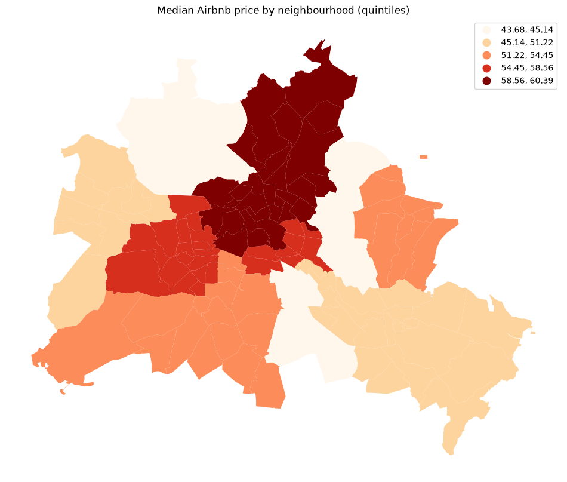
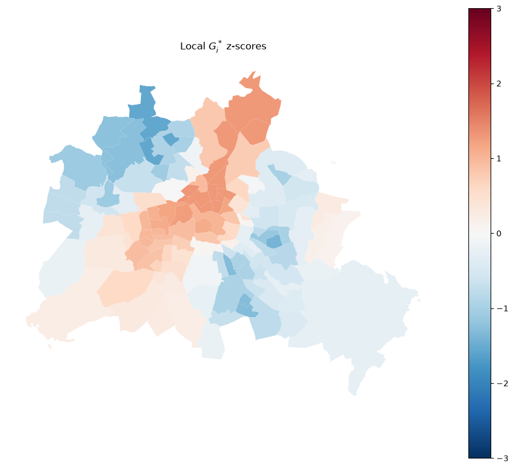
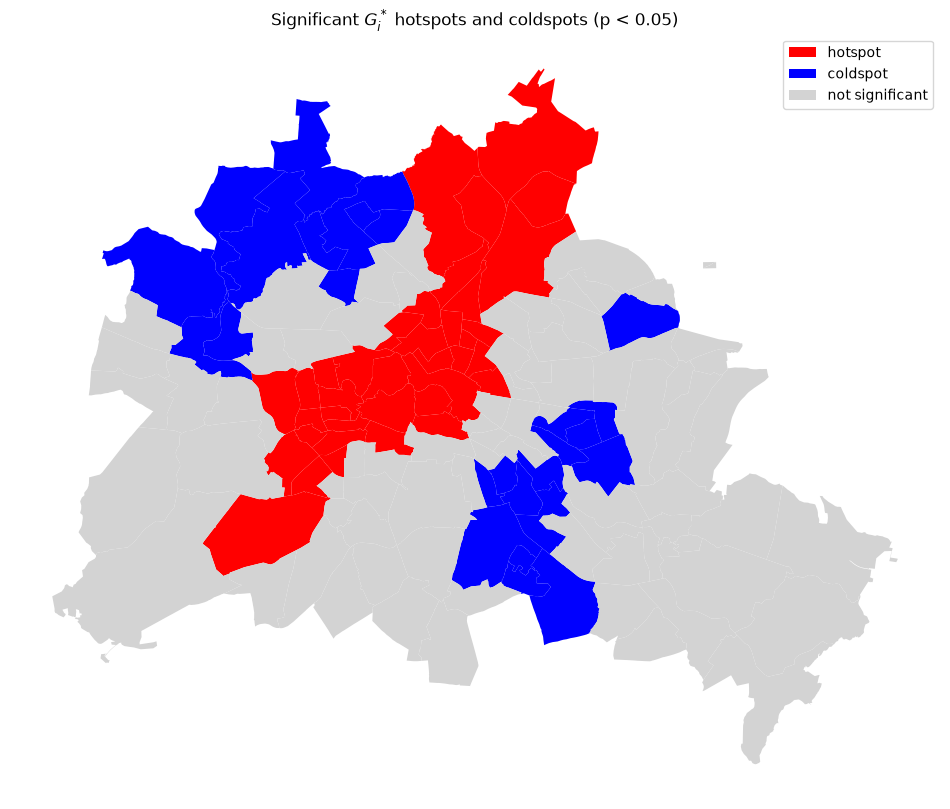
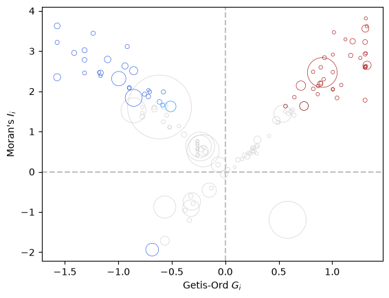

Hotspot Analysis with Getis-Ord G and G*¶
This notebook covers Getis-Ord statistics for identifying spatial concentrations of high or low values.
Learning goals¶
By the end of this notebook, you will be able to:
compute local \(G_i^*\) statistics to identify individual hotspots and coldspots
map statistically significant hotspots and coldspots
The substantive question is whether high Airbnb prices cluster spatially — and, if so, where those high-price hotspots are located.
import geopandas as gpd
import matplotlib.pyplot as plt
import pandas as pd
from libpysal import graph
import esda
from esda.inspection import LocalCrossPlot
Data preparation¶
We use the same Berlin neighborhood dataset as in the global Moran’s I and local Moran’s I notebooks so that results can be compared directly.
df = gpd.read_file("data/berlin-housing.gpkg")
fig, ax = plt.subplots(figsize=(12, 10))
df.plot(column="median_pri", scheme="Quantiles", k=5, cmap="OrRd", legend=True, ax=ax)
ax.set_axis_off()
ax.set_title("Median Airbnb price by neighbourhood (quintiles)")
plt.show()

Why Getis-Ord G?¶
Moran’s \(I\) measures spatial autocorrelation by comparing each observation to its deviation from the global mean. A High-High cluster in Moran’s framework means both a neighborhood and its neighbors are above the mean.
Getis-Ord \(G\) takes a different approach: it measures spatial concentration of raw values. A high \(G\) means large values are co-located with other large values — a true hotspot. Because \(G\) works with raw values rather than mean-centered deviations, it is particularly well-suited to detecting concentration of phenomena that are always non-negative (counts, prices, rates).
The global statistic \(G\) answers: is there a statistically significant overall concentration of high or low values? The local statistic \(G_i^*\) answers: which specific locations are part of a hotspot or coldspot?
# G requires binary (not row-standardised) weights
geog = graph.Graph.build_contiguity(df, rook=False)
y = df["median_pri"]
From global to local: \(G_i^*\)¶
The global \(G\) tells us whether concentration exists; \(G_i^*\) (G-star) tells us where. For each location \(i\), \(G_i^*\) computes the ratio of the sum of values in \(i\)’s neighbourhood (including \(i\) itself) to the sum of all values. A large positive \(z\)-score flags a hotspot — a neighbourhood surrounded by other high-value neighbourhoods. A large negative \(z\)-score flags a coldspot.
The key difference from Moran’s I quadrant labels is that \(G_i^*\) only distinguishes hotspots from coldspots; it does not identify spatial outliers (High-Low or Low-High).
Computing \(G_i^*\)¶
We pass star=True to include the focal observation in the local sum, producing \(G_i^*\) (the more commonly reported variant). Weights must be binary.
g_local = esda.G_Local(y, geog, star=True, seed=12345)
print(f"Significant hotspots (p<0.05): {(g_local.p_sim < 0.05).sum()}")
Significant hotspots (p<0.05): 63
/home/runner/micromamba/envs/test/lib/python3.14/site-packages/esda/getisord.py:362: UserWarning: Gi* requested, but (a) weights are already row-standardized, (b) no weights are on the diagonal, and (c) no default value supplied to star. Assuming that the self-weight is equivalent to the maximum weight in the row. To use a different default (like, .5), set `star=.5`, or use libpysal.weights.fill_diagonal() to set the diagonal values of your weights matrix and use `star=None` in Gi_Local.
w, star = _infer_star_and_structure_w(w, star, transform)
Mapping \(G_i^*\) z-scores¶
The z-score map gives a continuous view of local concentration. Red (large positive) indicates hotspot cores; blue (large negative) indicates coldspot cores.
df = df.copy()
df["Zs"] = g_local.Zs
fig, ax = plt.subplots(figsize=(12, 10))
df.plot(
column="Zs",
cmap="RdBu_r",
legend=True,
ax=ax,
vmin=-3,
vmax=3,
)
ax.set_axis_off()
ax.set_title("Local $G_i^*$ z-scores")
plt.show()

Mapping significant hotspots and coldspots¶
By applying a significance threshold (p < 0.05) we retain only the statistically credible clusters.
sig = g_local.p_sim < 0.05
hotspot = sig & (g_local.Zs > 0)
coldspot = sig & (g_local.Zs < 0)
spot_labels = pd.Series("not significant", index=df.index)
spot_labels[hotspot] = "hotspot"
spot_labels[coldspot] = "coldspot"
df["spot"] = spot_labels
colors = {"hotspot": "red", "coldspot": "blue", "not significant": "lightgrey"}
df["color"] = df["spot"].map(colors)
fig, ax = plt.subplots(figsize=(12, 10))
for label, color in colors.items():
df[df["spot"] == label].plot(ax=ax, color=color, label=label)
ax.legend()
ax.set_axis_off()
ax.set_title("Significant $G_i^*$ hotspots and coldspots (p < 0.05)")
plt.show()

Comparing Getis-Ord and Moran’s I results¶
Hotspots identified by \(G_i^*\) correspond approximately to the High-High cluster quadrant from local Moran’s \(I\), but the two methods can diverge when local variance is high — a neighborhood with very high prices surrounded by moderate prices may register as a spatial outlier in Moran but not a hotspot in \(G_i^*\).
One graphical device that can be used to explore the complementarities of the different local statistics is the local cross plot (Westerholt 2026).
lcp = LocalCrossPlot(geog).fit(y)
lcp.plot();
/home/runner/micromamba/envs/test/lib/python3.14/site-packages/esda/moran.py:1398: RuntimeWarning: invalid value encountered in divide
self.z_sim = (self.Is - self.EI_sim) / self.seI_sim

Interpreting the Local Cross Plot¶
The local cross plot combines three local statistics into a single diagnostic view. Following the cluster-plot framework proposed by Westerholt (2026), the horizontal axis represents the local hotspot tendency (Getis–Ord \(G_i^*\)), while the vertical axis represents local spatial autocorrelation (Local Moran’s \(I_i\)). The size of each point reflects LOSH (\(H_i\)), which measures the degree of local spatial heterogeneity or “roughness”.
The four quadrants can be interpreted as follows:
Quadrant I (upper right): observations that are part of a hotspot and exhibit positive local spatial autocorrelation. These are the most consistent hotspots, where the focal observation and its neighbors are jointly above the mean. A fire brick red point reflects a consistent hotspot where both \(G_i^*\) and \(I_i\) are significant. Coral reflects consistent high, but only \(I_i\) significant, while maroon is inconsitent high with only \(G_i^*\) significant. Grey indicates neither local statistic is significant.
Quadrant II (upper left): observations positive spatial autocorrelation reflecting concentrations of low values in space, or cold spots. These are consistent coldspots where neighboring values are jointly below the mean. A royal blue point reflects a consistent coldspot where both local statistics are significant. Dodger blue reflects consistent low, but only \(I_i\) is significant, while dark blue is inconsitent high with only \(G_i\) significant. Grey indicates neither local statistic is significant.
Quadrant III (lower left): Moran’s I reflecting negative spatial association with \(G_i\) pointing to low values dominating the clustering in space. Same color scheme interpretation as in Quadrant II.
Quadrant IV (lower right): Moran’s I reflecting negative spatial association with \(G_i\) pointing to high values dominating the clustering in space. Same color scheme interpretation as in Quadrant I.
The size of the points adds an additional layer of interpretation. Small points indicate low LOSH values and therefore relatively homogeneous local neighborhoods. Large points indicate high LOSH values, suggesting substantial variation among neighboring observations. As argued by Westerholt, these large-point observations are often the most interesting because they may represent transition zones, boundaries between regimes, or locations where hotspot and autocorrelation signals are ambiguous.
For the Berlin data, observations located near the diagonals of the plot represent the clearest examples of consistent hotspots and coldspots. Observations with large LOSH values and positions away from the diagonals deserve closer inspection because they may reveal neighborhoods where environmental conditions vary sharply over short distances. Rather than examining separate maps of Local Moran’s \(I\), \(G_i^*\), and LOSH, the cross plot provides a compact summary of local clustering, local outliers, and local heterogeneity in a single visualization.
Takeaways¶
Global G tests whether the entire study area has more concentration of high (or low) values than expected under spatial randomness.
Local \(G_i^*\) assigns each location a z-score that reflects whether it sits in a hotspot or coldspot.
Getis-Ord works on raw values, making it appropriate for non-negative quantities (prices, counts, rates).
Unlike local Moran’s \(I\), \(G_i^*\) does not identify spatial outliers — only high-value and low-value clusters.
Permutation inference avoids distributional assumptions and is the recommended approach for both the global and local statistics.